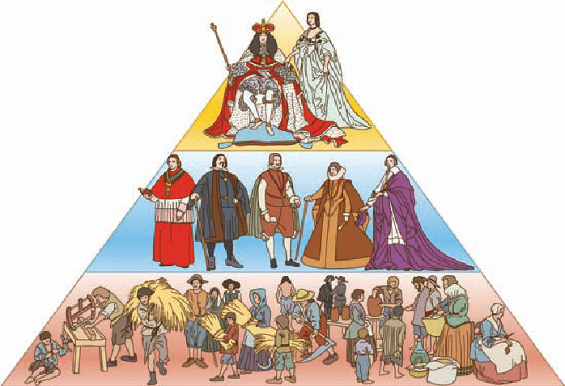

De los hechos que concluyeron con la unión de la Corona de Castilla y la Corona de Aragón bajo un mismo monarca la región tiene varias constancias.
La reina de Castilla, Isabel I, había nacido y se había criado en la provincia de Ávila. Llegó a reina tras una guerra civil castellana que ganó a los partidarios de Juana la Beltraneja. El matrimonio de Isabel I de Castilla y Fernando II de Aragón se llevó a cabo en el Palacio de los Vivero, en la ciudad de Valladolid en 1469. En 1492 y bajo el patrocinio de la Corona castellana, Cristóbal Colón descubre América. Muere en Valladolid en 1506 pensando que ese territorio era Asia.
Con el descubrimiento de América, Castilla y León tiene un papel de gran relevancia en el ámbito jurídico-universitario y teológico. Burgos, Valladolid y Salamanca son las tres ciudades donde se desarrolló toda la legislación de Indias, y se debatió sobre preceptos de Derecho Internacional, teología y la situación de los indígenas americanos. Estamos hablando de los dominicos Francisco de Vitoria, Bartolomé de las Casas, Fernando Vázquez de Menchaca y leyes como las de Burgos o Valladolid. Dichas leyes son considerados por algunos autores como precursoras de las cartas modernas de derechos humanos.
También en la región se decidió cómo repartirse el nuevo mundo entre portugueses y castellanos, en el conocido Tratado de Tordesillas de 1494.
La Edad Moderna es el tercero de los periodos históricos en los que se divide convencionalmente la historia universal, comprendido entre el siglo XV y el XVIII. Cronológicamente alberga un periodo cuyo inicio puede fijarse en la caída de Constantinopla (1453) o en el descubrimiento de América (1492), y cuyo final puede situarse en la Revolución francesa (1789) o en el fin de la década previa, tras la independencia de los Estados Unidos (1776).
En esta convención, la Edad Moderna se corresponde al período en que se destacan los valores de la modernidad (el progreso, la comunicación, la razón) frente al período anterior, la Edad Media, que es generalmente identificado como una edad aislada e intelectualmente oscura. El espíritu de la Edad Moderna buscaría su referente en un pasado anterior, la Edad Antigua identificada como Época Clásica.
En el siglo XX se añadió una cuarta edad a la historia de la humanidad, la denominada como Edad Contemporánea, en la cual no solo no se aparta, sino que también se intensifica extraordinariamente la tendencia a la modernización, ya que sus características sensiblemente diferentes, fundamentalmente porque significa el momento de éxito y desarrollo espectacular de las fuerzas económicas y sociales que durante la Edad Moderna se iban gestando lentamente: el capitalismo y la burguesía; y las entidades políticas que lo hacen de forma paralela: la nación y el Estado.
En la Edad Moderna se vincularon los dos "mundos" que habían permanecido casi absolutamente desvinculados desde la Prehistoria: el Nuevo Mundo (América) y el Viejo Mundo (Eurasia y África). Cuando se consolidó la exploración europea de Australia se habló de Novísimo Mundo.
La disciplina historiográfica que la estudia se denomina Historia Moderna, y sus historiadores, "modernistas".
Los burgueses, nombre que se dio en la Edad Media en Europa a los habitantes de los burgos (los barrios nuevos de las ciudades en expansión), tenían una posición ambigua en la Edad Moderna. Una visión lineal, que le interese los hechos hasta la Revolución Burguesa, les buscará emplazándose a sí mismos fuera del sistema feudal, como hombres libres que, en Europa, se hicieron poderosos gracias a la creación de redes comerciales que la abarcaban de norte a sur. Ciudades que habían conseguido una existencia libre entre el imperio y el papado, como Venecia y Génova, crearon verdaderos imperios comerciales. Por su parte, la Hansa dominó la vida económica del Mar Báltico hasta el siglo XVIII. Las ciudades eran islas en el océano feudal, pero el que la burguesía fuera realmente un factor que disolviera el sistema feudal, o más bien un testimonio de su dinamismo, al expandirse con el excedente que los señores extraen en sus feudos, es un tema que ha discutido extensamente la historiografía.
El mismo papel de la ciudad europea durante la Edad Moderna puede considerarse un proceso de larga duración dentro del milenario proceso de urbanización: la creación de una red urbana, preparación necesaria para el cumplimiento de las funciones sociales del mundo industrial moderno. A la línea de meta llegaron con ventaja metrópolis como Londres y París en el siglo XVIII; por el camino quedaron rezagadas, sin capacidad de articular una economía nacional de dimensiones suficientes para el despegue industrial, ciudades relegadas a la condición de semiperiféricas: Lisboa, Sevilla, Madrid, Nápoles, Roma o Viena; o, con otras características funcionales, independientemente de su tamaño, las de la periferia euro-mediterránea: Moscú o San Petersburgo, Estambul, Alejandría o El Cairo; y las de la arena exterior, tanto en espacios ajenos a la colonización europea (Pekín) como las ciudades coloniales.

Aunque fue enorme la diferencia de posición económica entre alta burguesía, baja burguesía y plebe empobrecida, no lo estaba en muchos extremos por su condición social: todas eran pueblo llano. La diferenciación entre burguesía y campesinado todavía era más significativa, pues fuera de las ciudades es donde vivía la inmensa mayoría de la población, dedicándose a actividades agropecuarias de muy escasa productividad, lo que las condenaba al anonimato histórico: la producción documental, que se desarrolla de forma extraordinaria en la Edad Moderna (no solo con la imprenta, sino con el auge burocrático del estado y de los particulares: registros económicos, protocolos notariales...) es esencialmente urbano. Los fondos de los archivos europeos empiezan ya a competir en densidad de fuentes documentales con enorme ventaja frente a los chinos, de milenaria continuidad.
También puede verse a la burguesía como un aliado del absolutismo, o como un agregado social sin verdadera conciencia de clase, cuyos individuos prefieren la "traición" que les permite el ennoblecimiento por compra o matrimonio, sobre todo cuando la ideología dominante persigue el lucro y santifica la renta de la tierra.Su papel como agente revolucionario había ocasionado las revueltas populares urbanas de la Edad Media, y continuará vivo pero errático en las de la Edad Moderna, algunas teñidas de ideología religiosa, otras de revuelta antifiscal o incluso de motines de subsistencia.
Pero con incapacidad de la última reina Trastámara, Juana I, y la llegada de una nueva dinastía, los Habsburgo, Castilla cayó en una guerra civil, las Comunidades de Castilla. Los monarcas austro-borgoñones traían una visión imperial que a vista de los castellanos no beneficiaba a esta tierra. Los nuevos monarcas, además, ansiaban ya no una Monarquía Autoritaria, si no la Absoluta, y las Cortes Medievales representadas por los 3 Estados sólo suponían un estorbo para esas ambiciones. Finalmente los comuneros fueron derrotados y los Habsburgo afianzaron su poder, creando uno de los mayores imperios que ha habido nunca sobre la tierra. Los privilegios feudales fueron desapareciendo de la Península, ya que los monarcas querían ese mismo poder que tenían en Castilla también en Aragón, lo que acabó homogeneizando la actual España.
Como Día de Castilla y León se ha escogido el la fecha histórica del 23 de abril, día en el que, en 1521, los comuneros castellanos fueron derrotados. Desde finales de la década, varias decenas de miles de castellanoleoneses acuden a Villalar de los Comuneros (Valladolid), a celebrar el día. Como precursor y antecedente más remoto se cita el homenaje que El Empecinado realizó a los comuneros en Villalar en 1821.
El rey Felipe II nació en la ciudad de Valladolid en 1527. Se le conocía como el rey sol, pues sus territorios concentraban desde los Países Bajos españoles hasta Filipinas pasando por América. Durante 1601 hasta 1606, por influencia del Duque de Lerma, la capitalidad del reino recayó en Valladolid, pasando después a Madrid, hasta nuetros días.
En otros continentes, la caracterización social de una clase definida por su actividad urbana, su identificación con el capital y la condición de no privilegiada, es mucho más problemática. No obstante, se ha aplicado el término en Japón, cuya formación económico social ha sido asimilada al feudalismo, y con muchas más dificultades en China, aunque las interpretaciones de su historia están muy vinculadas a posiciones ideológicas.
El mundo islámico tenía desde sus orígenes una fuerte componente comercial, con un desarrollo impresionante de las rutas a larga distancia (navieras y caravaneras), y una artesanía superior a la europea en muchos aspectos, pero el desarrollo de las fuerzas productivas demostró ser menos dinámico, y con éstas la dinámica social. Los mercaderes árabes o el zoco, sin dejar de ser bullicioso y reflejar el descontento popular en periodos de crisis, no estuvieron nunca en condiciones de significar un desafío a las estructuras.
América fue, desde el comienzo de su colonización, una tierra de promisión donde se hacían experiencias de ingeniería social. Las reducciones jesuíticas o los peregrinos del Mayflower son casos extremos, siendo el fenómeno más importante la ciudad colonial hispánica, con su urbanismo trazado a cordel a partir de una amplia Plaza Mayor sobre tierras vírgenes o ciudades precolombinas, a veces incluso convirtiéndose en ciudad peregrina, cambiando su emplazamiento por terremotos o condiciones sanitarias. Es posible encontrar la formación de una burguesía en América durante la Edad Moderna, en las colonias británicas del norte, y en los criollos hispanoamericanos, que impulsarán los procesos de independencia y contribuirán decisivamente al final del Antiguo Régimen y la plasmación de los valores de la Edad Contemporánea.
Las exploraciones financiadas por las monarquías europeas (en Portugal, el caso precoz de Enrique el Navegante), y llevadas a cabo por personajes como Cristóbal Colón, Juan Caboto, Vasco de Gama o Hernando de Magallanes, surcaron mares hasta ese momento inexplorados y llegaron a tierras que eran desconocidas por los europeos, posibilitados gracias a una serie de adelantos en materia de náutica: la brújula y la carabela. La relación que el espíritu individualista y la búsqueda de prestigio pudieran tener con los valores burgueses no es tan clara: no supone ninguna variación desde tiempos de Marco Polo y tiene posiblemente más relación con el espíritu caballeresco y los valores nobiliarios de la baja edad media.Aprovechando sus descubrimientos, España, Portugal y Holanda primero, y Francia e Inglaterra después, construyeron imperios coloniales, cuyas riquezas, sobre todo la extracción de oro y plata de América, estimularon todavía más la acumulación de capital y el desarrollo de la industria y el comercio, aunque a veces más fuera del propio país que dentro, como fue el caso de la castellana, que sufrió las consecuencias de la Revolución de los Precios y una política económica, el mercantilismo paternalista que busca más la protección del consumidor (y de los privilegiados) que la del productor.
Fuera de Inglaterra y Holanda, en el siglo XVII, la burguesía tenía un poder económico relativo, y ningún poder político. No sería propio decir que llegó a sus manos ni siquiera cuando reyes como Luis XIV empezaron a llamar a burgueses como ministros de estado, en vez de la vieja aristocracia.
En Europa Occidental, desde finales de la Edad Media algunas monarquías tendieron a la formación de lo podría denominarse como estados nacionales, en espacios geográficamente definidos y con mercados unificados y con una dimensión adecuada como para la modernización económica. Sin llegar a los extremos del nacionalismo del siglo XIX y XX, se evidenciaba la identificación de algunas monarquías con un carácter nacional, y se buscaban y exageraban esos rasgos, que podían ser las leyes y costumbres tradicionales, la religión o la lengua. En ese sentido iban la reivindicación de la lengua vernácula para la corte de Inglaterra (que durante toda la Edad Media hablaba francés) o la argumentación de Nebrija a los Reyes Católicos en su Gramática Castellana de que, deben imitar a Roma y al latín porque la lengua va con el imperio (originándose una serie de orgullosas defensas del español en actos diplomáticos).
Este proceso no fue ni continuo ni sin altibajos, y no estaba claro en sus comienzos si habría de prevalecer la Idea Imperial de Carlos V, el mosaico multinacional dinástico de los Habsburgo o la expansión europea del Imperio otomano. Si en el siglo XVIII parecían fuertemente establecidos los actuales Estados de España, Portugal, Francia, Inglaterra, Suecia, Holanda o Dinamarca, nadie podía haber previsto el destino de Polonia, repartido entre sus vecinos. Los intereses dinásticos de las monarquías eran cambiantes y produjeron a lo largo de la Edad Moderna inacabables intercambios de territorios, por razones bélicas, matrimoniales, sucesorias y diplomáticas, que hacían que las fronteras fueran cambiantes, y con ellas los súbditos.
El aumento del poder de los reyes se centró en tres direcciones: eliminación de todo contrapoder dentro del Estado, expansión y simplificación de las fronteras políticas (el concepto de fronteras naturales) en competencia con los demás reyes, y eliminación de estructuras feudales supranacionales (las dos espadas: el papa y el emperador).